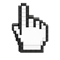

RANIBALLS SIMULATOR
a 2d physics sandbox project
Click + drag + release
to fling a ball
Shift + click
for an explosion
Hold P
to pour
W
wind
F
flip wind
G
flip gravity
H
black hole
X
explode at cursor
S
slow-mo
E
earthquake
C
clear
